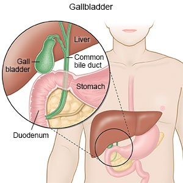

Biliary dyskinesia

SYMPTOMS:
- Episodic periods of abdominal pain (located in the right upper quadrant)
-
Abdominal pain that occurs after eating
-
Intolerance of fatty foods
-
Pain that is severe enough to limit a person’s daily activities
-
Nausea (that is accompanied with the bouts of pain)
-
Vomiting
-
Bloating
CAUSES
- The exact cause of biliary dyskinesia is unknown.3 It is thought that a possible cause could be an underlying metabolic disorder (such as a hormone or enzyme deficiency) that impacts the movement of the gastrointestinal (GI) tract.
-
Biliary dyskinesia occurs mostly in older children and adults. It is a common diagnosis in children; in fact, in some pediatric hospitals, biliary dyskinesia has become the most common reason for gallbladder removal.
-
Biliary dyskinesia is sometimes associated with a condition called cholecystitis, which is a long-term condition involving inflammation of the gallbladder.
DIAGNOSIS:
Diagnostic criteria are defined as the signs and symptoms (as well as lab and other test results) that a person must have, in order for a diagnosis of a specific disorder or disease to be made. The diagnostic criteria for biliary dyskinesia include:
- Right upper quadrant pain in the abdomen
-
Normal ultrasound of the gallbladder—without gallstones, sludge (a collection of bilirubin, calcium, and cholesterol that builds up when bile stays in the gallbladder too long), gallbladder wall thickening (usually caused by an obstruction) or significant common bile duct (CBD) dilatation (caused by stones, tumors or other obstructive process)
TREATMENT
- The treatment of biliary dyskinesia is removal of the gallbladder, also called a cholecystectomy. Some experts suggest that a cholecystectomy should not be performed if a person has been having symptoms for less than three months.
-
Before a cholecystectomy is performed, every person with symptoms of biliary dyskinesia should have complete lab studies, including liver enzyme studies, conjugated bilirubin, amylase, and lipase levels. These labs should all be normal before surgery is considered an option for the treatment of biliary dyskinesia.